This is a little letter, but on a website, just for you.
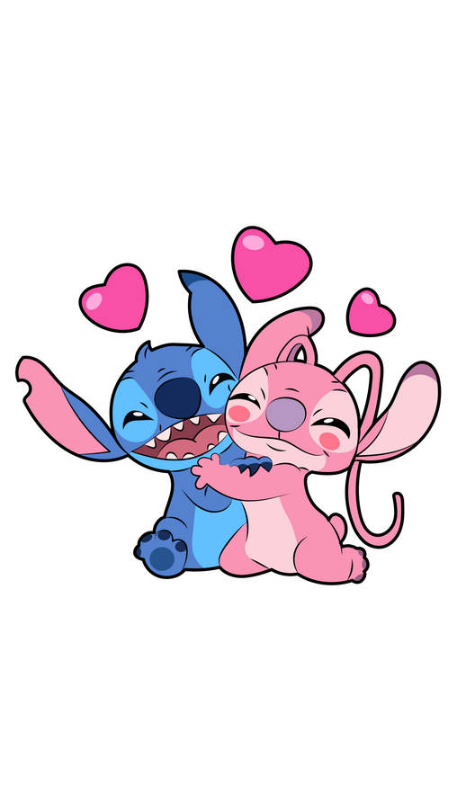
I don’t even know where to start, because there’s so much I want to say, but we have a long time to mention all of them and create even more. But I want to start with our first picture together.
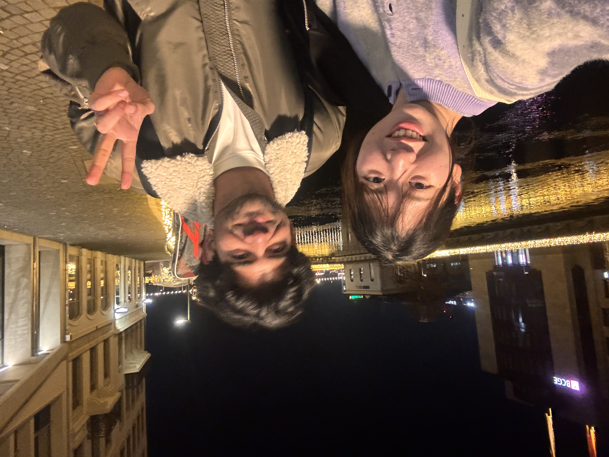
I was already in Geneva before I met you. I had walked its streets, seen the lake, watched the Jet d’Eau rise and fall and it was really pretty. I knew the cafés, the calm, the elegance, the quiet confidence of the city. I thought I knew it well.
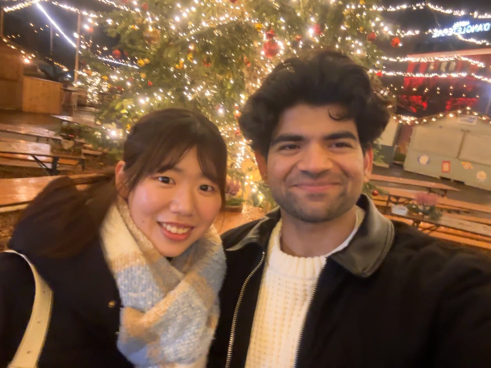
But then I met you. And suddenly, everything I thought I knew felt incomplete. With you, Geneva became something else entirely. Streets I had walked without thinking suddenly felt alive. Corners I had passed a dozen times held meaning. Even the simplest moments—just being beside you, talking, laughing, sharing silence—felt charged with something rare and delicate. it felt like a whole new city.
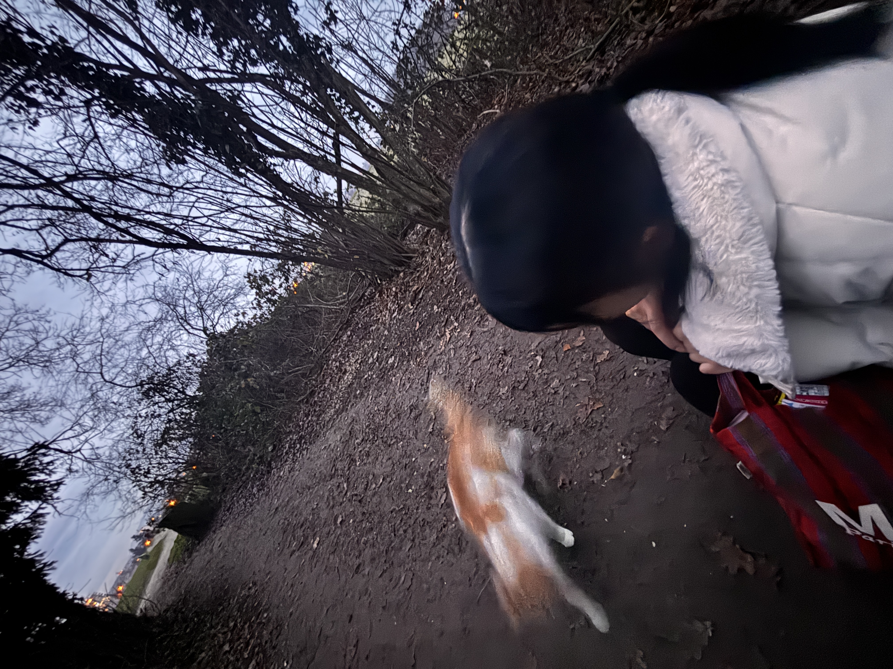
And ofcourse I am not talking about the city *wink wink*. What amazes me most is how little time it actually was. Just two months. On paper, it sounds small, almost insignificant. But what we shared never felt small to me. It felt deep, intentional, and real. It felt like something that didn’t rush, yet somehow fit an vast amount of emotion into a short space of time.
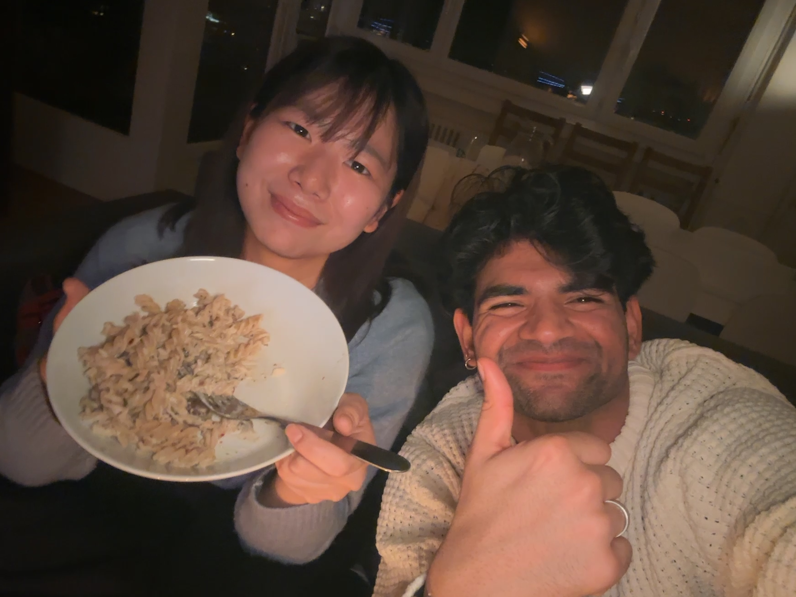
You made ordinary moments unforgettable. You made a familiar city new. You made time feel softer. I dont think i can pick a single moment that stands out, because it was the whole experience of being with you that made it so special. But still I'm gonna post some of our favourite pictures together, because they are a reminder of how much we shared and how much we created together in such a short time.
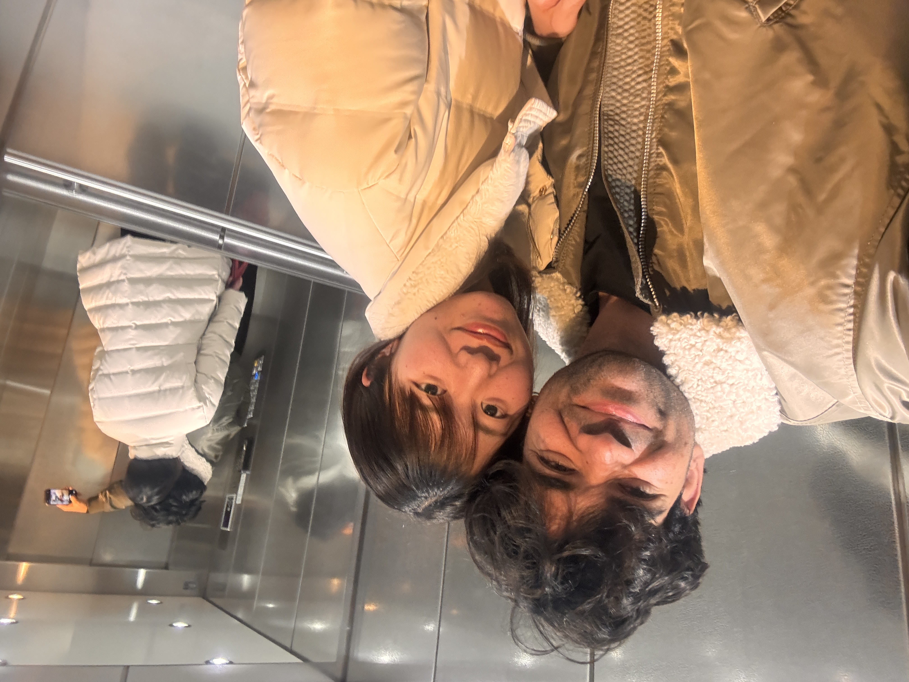
The deep conversations, the quiet walks, the shared meals, the laughter, the little jokes, the moments of vulnerability, the shyness, the ignorance (dont thibk I'll forget it) the way we just existed together in those moments—it all felt like something I had never experienced before. It felt like a kind of magic that I didn’t want to end.
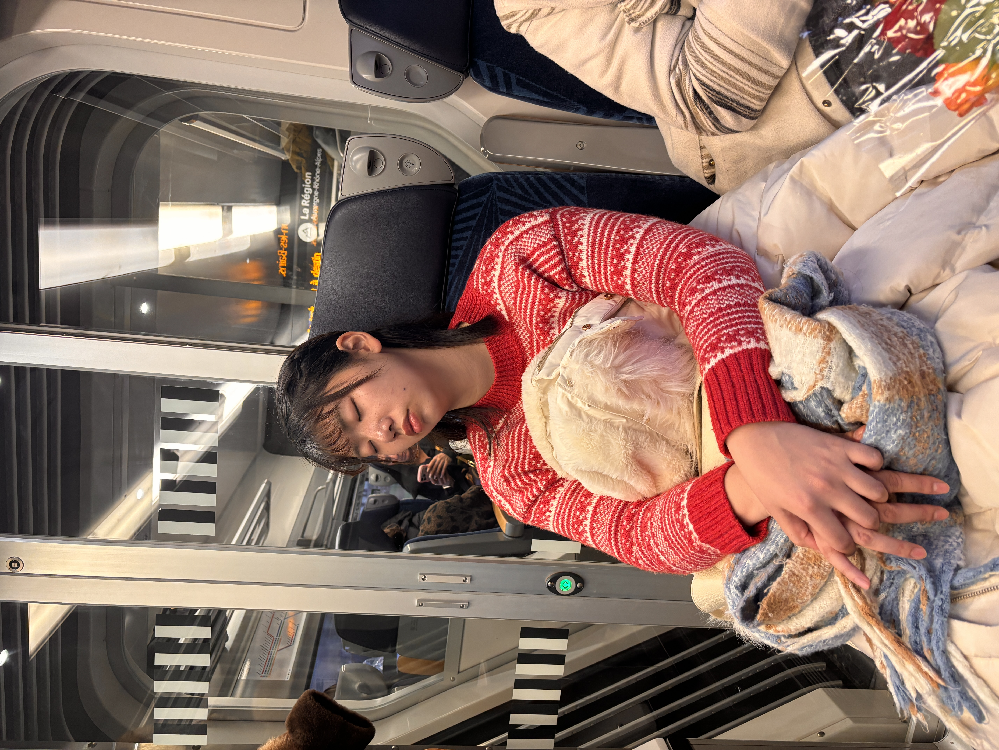
But we both knew it's gonna take a diffferent turn when we both go to different countries. I like to think it's the beginning of a new chapter, which we can write in beautiful handwriting (mine is not so good tbh).
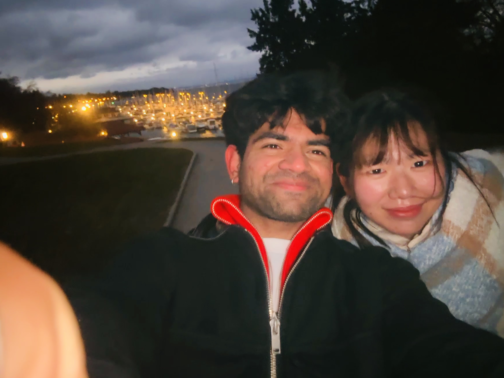
I know we will have our ups and downs in future, but I also know that communication is key, and with that we can fix everything. And you know I am a patient man. (dont you think the oppposite).
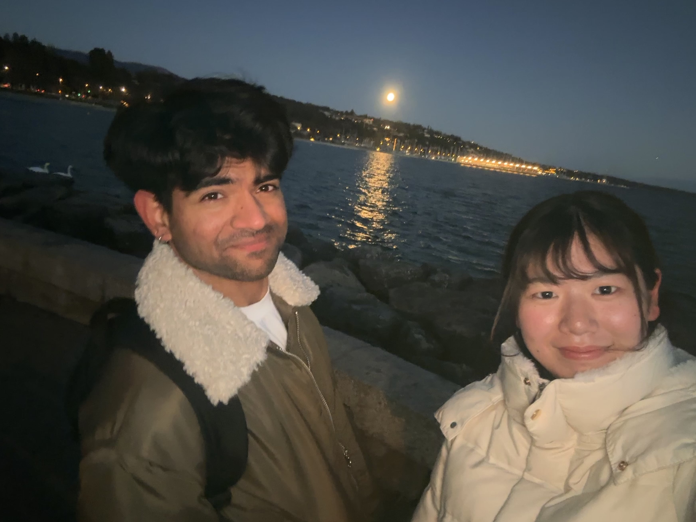
This is the first letter, and for sure it’s not the last. I hope we can keep sharing our thoughts, feelings, and memories in this way, even when we are apart. Because even though we may be in different places, I want you to feel close to me in every way possible. And if this letter can help us do that, then it will have served its purpose.
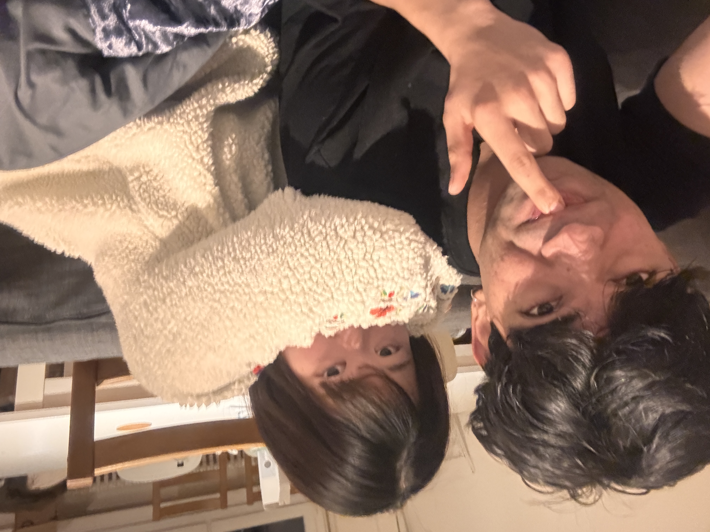
And most importantly, I want both of us to be keep laughing, teasing each other, and enjoying the little things that make our relationship special. Because at the end of the day, it’s those moments of joy and connection that will keep us strong, no matter where we are in the world.
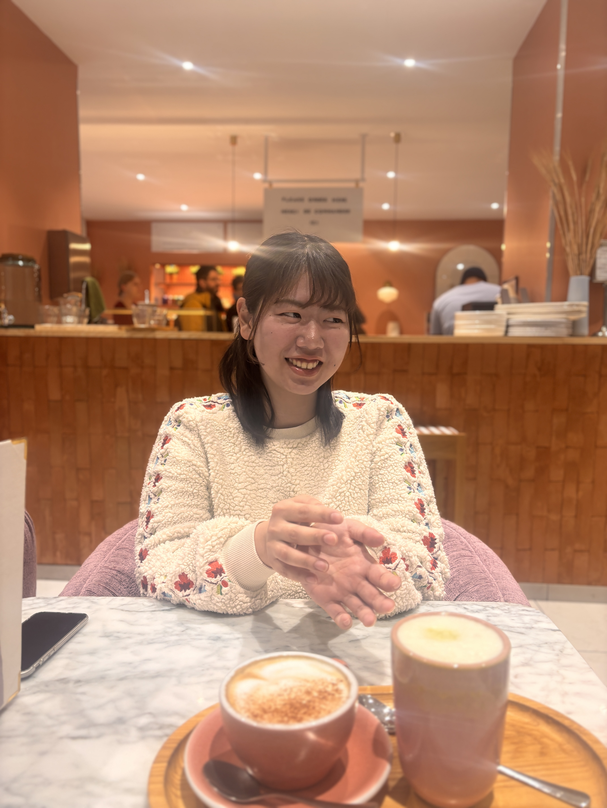
Always know that i am always just a text and a phone call away. Anytime you feel weird or just want to talk, I am here. I care about you and I want to be there for you, even if we are not physically together. So please don’t hesitate to reach out whenever you need to and I'll do the same.
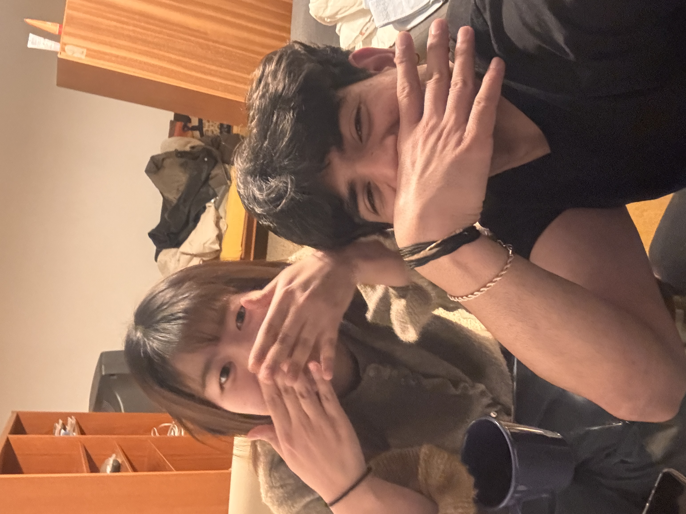
Let's see each other soon in Japan, and create even more beautiful memories together. I am really looking forward to that day, and I hope it comes sooner than we think.
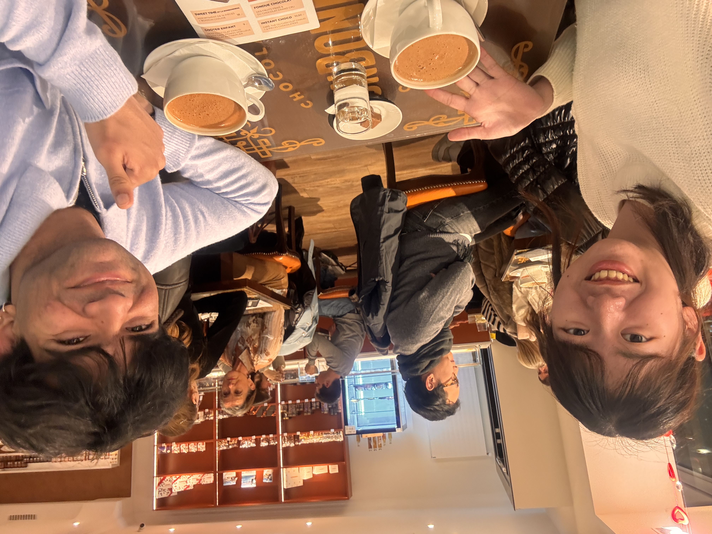
Until then, take care of yourself honey, I'll check up on you everyday obviously and ask the same question "How was your day", beacuse its the core of all conversations and I want to know how you are doing, what you are thinking, and how you are feeling, even if it's just through words on a screen. I like you and I know it's gonna grow more and more. (I'm obviously the red one). Last but not least, would you like to be my valentine?
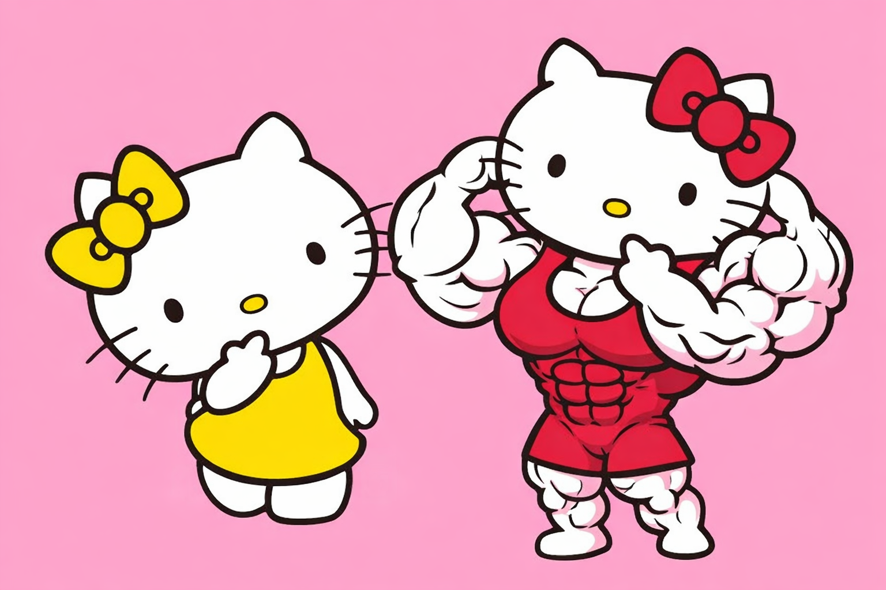